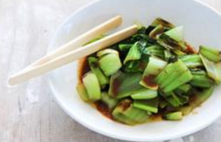
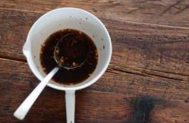

Bok Choi

Teriyaki Sauce
Bok Choi
Teriyaki Sauce
Five week course in London
A five week introduction to traditional
Japanese vegetarian meals, teaching you a
selection of rice and noodle dishes
One day workshop
An intensive one-day course looking at how to create the most delicious sauce for use in a range of Japanese cookery.
Yakiri(grilled chicken)
Tsukunep(minced chicken patties)
Okonomiyaki(saory pancakes)
Miszutaki(chicken stew)
Yoko's Kitchen
27 Redchurch Street
Shoreditch
London E2 7Dp